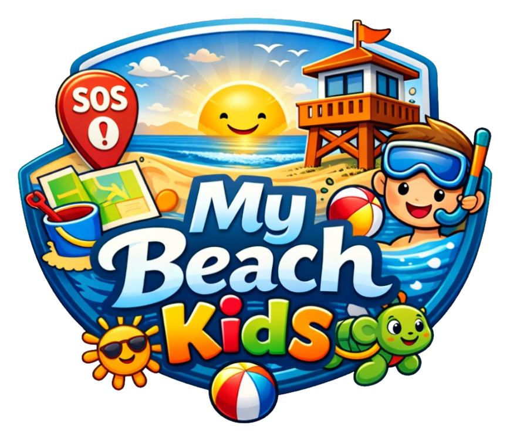
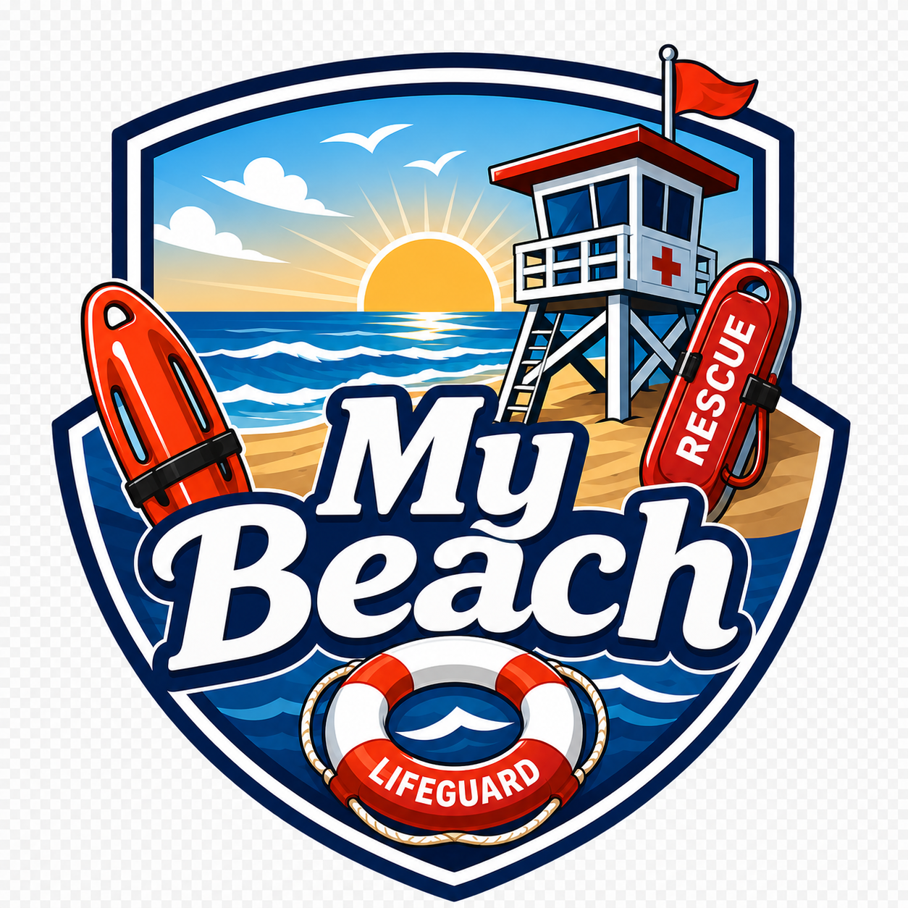

My Beach
Segurança, salvamento e operação em tempo real, com destaque para resposta a crianças perdidas, jornada lúdica protegida e My Beach IA para famílias na praia.
Visão geral
Uma plataforma conectada do cidadão ao centro de comando
O My Beach combina quatro frentes digitais: My Beach - Banhistas, My Beach - Kids, My Beach - Guarda Vidas e Painel de Controle - Operacional.
Desafios da praia
Problemas reais exigem resposta coordenada
Criança perdida
A busca precisa mobilizar a praia com rapidez, foto, confirmação segura e localização para reencontro.
Emergência no mar
Afogamento e emergências médicas exigem acionamento imediato, orientação ao banhista e equipe informada em campo.
Riscos preventivos
Chuva, raios, corrente de retorno, buracos e áreas inseguras precisam chegar ao usuário antes que virem ocorrência.
Operação distribuída
Gestores precisam enxergar guarda-vidas, viaturas, postos e ocorrências em tempo real para decidir melhor.
Aplicativos especializados para cada público
My Beach - Banhistas
Informação de praia, SOS e criança perdida
Seleção de cidade e praia, dados de mar e clima, pontos turísticos, regras, comércio sugerido e abertura de alertas com geolocalização, incluindo o fluxo sensível de criança perdida.
- SOS para afogamento, emergência médica e criança perdida
- Registro apoiado por perfil infantil protegido quando autorizado
- Alerta de criança perdida enviado para banhistas em um raio de 1 km
- Orientações imediatas após o registro da ocorrência
- Notificações preventivas de chuva nas próximas horas e alertas de raios da Defesa Civil
- Registro do chamado mesmo em condições difíceis de sinal
- Histórico recente e status do chamado



My Beach - Kids
Área lúdica para crianças com proteção parental
Experiência infantil com missões, descobertas, conquistas, perfil protegido e My Beach IA, feita para engajar a criança sem abrir mão do controle familiar e da privacidade.
- Missões infantis com progresso e recompensas
- My Beach IA identifica fotos, explica o assunto e cria histórias infantis
- Curiosidades em texto e áudio para estimular aprendizado
- Mapa de aventura, selos e descobertas com linguagem infantil
- Descobertas privadas com pedido de publicação
- Aprovação ou rejeição pelo responsável
- Auditoria local de consentimento e decisões parentais



My Beach - Guarda Vidas
Aplicativo de campo para o agente de praia
Operação em turno com presença online, localização periódica, fila de ocorrências e transição de status dos atendimentos.
- Acesso individual para guarda-vidas em serviço
- Presença operacional com ping a cada 60 segundos
- Atualização manual de localização
- Apoio ao atendimento de ocorrências em campo
Status do turno
ONLINE
Último ping
10:23 Intervalo
60s
10:23 Intervalo
60s
Painel de Controle - Operacional
Centro de comando para monitorar, responder e auditar
O Painel de Controle - Operacional centraliza a gestão da praia em tempo real. A equipe acompanha ocorrências, efetivo em campo, postos, zonas, praias, viaturas e relatórios em uma única visão, com localização exata dos guarda-vidas logados e das unidades de apoio. Também permite demarcar áreas inseguras, como pontos com corrente de retorno, buracos e outros riscos. Sempre que um novo local de risco é informado, os aplicativos My Beach - Banhistas e My Beach - Guarda Vidas são atualizados, e pessoas em um raio de 200 metros recebem notificação de alerta.
Dashboard operacional
Mapa tático
Ocorrências
Efetivo
Frota
Postos e zonas
Conteúdo do app
Relatórios
Histórico operacional


Fluxo integrado
Do chamado ao encerramento
Cidadão aciona SOS
O My Beach - Banhistas registra o tipo de emergência, identifica praia, localização e contexto, avisa o centro de controle e o guarda-vidas mais próximo, e orienta quem pediu ajuda até a chegada da equipe especializada.
Guarda-vidas assume o atendimento
O My Beach - Guarda Vidas recebe a ocorrência em campo, permite que o profissional assuma o chamado, atualize o status do atendimento e mantenha a operação informada durante o deslocamento e a resposta.
Painel acompanha em tempo real
O Painel de Controle - Operacional monitora cada etapa da ocorrência e permite acionar apoio quando necessário, como embarcação, helicóptero, drone ou unidade de resgate.
Relato final vira inteligência
Ao encerrar o atendimento, o relato final fica registrado e alimenta dados sobre locais, horários e tipos de ocorrência mais frequentes, ajudando a planejar melhor a operação e reduzir novos riscos.
Diferencial principal
Crianças protegidas antes, durante e depois do passeio
O My Beach trata o tema infantil em três frentes conectadas: prevenção, vínculo familiar por meio de uma área lúdica com IA, e mobilização rápida da praia quando uma criança é reportada como perdida.
Fluxo de criança perdida
Quando o responsável aciona criança perdida, o My Beach mobiliza a praia de forma organizada: pessoas em um raio de 1 km recebem um alerta no celular com a foto autorizada da criança, ajudando a ampliar a busca sem depender de improviso.
- Acionamento direto pelo botão SOS
- Alerta para banhistas próximos com foto da criança
- Quem encontra pode tocar em “Criança encontrada” pelo próprio alerta
- O app solicita uma nova foto para o responsável confirmar
- Após a validação, todos recebem aviso de criança encontrada
- Responsável e pessoa que encontrou recebem a localização um do outro para facilitar o reencontro
Chega de depender apenas de palmas na areia: a praia inteira pode ajudar, com informação certa e confirmação segura.
Jornada lúdica Kids
A criança participa de missões e descobertas sobre a praia, conversa com a My Beach IA por texto e áudio, e o responsável controla perfis, consentimentos, publicações e decisões de privacidade.
Missões
Descobertas
My Beach IA
Histórias em áudio
Conquistas
Perfil protegido
Conceito do marketing
Uma praia segura também precisa ser acolhedora, divertida e memorável
A ideia central do My Beach não é apenas reagir a emergências. É transformar o passeio em família em uma experiência assistida: a criança brinca, aprende e cria memórias, enquanto pais, agentes e administração contam com tecnologia para reduzir riscos e acelerar respostas.
Família tranquila
O responsável entende que existe uma rede digital preparada para informação, orientação e emergência.
Criança protagonista
A área Kids usa missões, descobertas, conquistas e My Beach IA para ensinar cuidado com a praia de forma leve.
Praia monitorada
Alertas, agentes ativos, zonas, postos e mapa tático conectam o evento na areia ao painel de comando.
Busca colaborativa
Quando uma criança se perde, a operação é avisada e banhistas em um raio de 1 km recebem alerta com foto, permitindo confirmação segura e reencontro orientado por localização.
Famílias e confiança
Proteção infantil apresentada de forma simples para o usuário final
Responsável no controle
A família decide o que pode ser cadastrado, visualizado e compartilhado na área infantil.
Criança protegida
O perfil infantil é tratado com cuidado, evitando exposição desnecessária e priorizando segurança.
Experiência positiva
Missões, conquistas e respostas da My Beach IA incentivam a criança a aprender sobre a praia enquanto permanece sob supervisão familiar.
Apresentação executiva
My Beach está pronto para ser demonstrado como solução completa
Uma apresentação clara da solução My Beach para famílias, guarda-vidas, gestores públicos e operadores de praia.